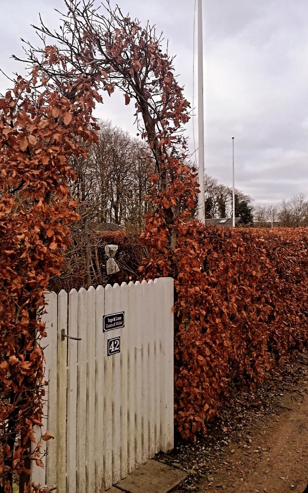
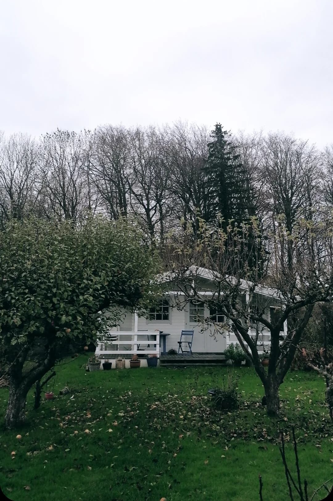

Risskov Haveforening
Choose Aarhus for your city break and now you need to see some nature? We have an offer for you - Risskov Haveforening. This is a place where Danes can open up their full potential in the realization process of hygge.
Small gardens,flowers, trees and tiny houses right under our noses. That is Risskov Haveforenng. A present from the nature in the beautiful City of Smiles.

With industrialization and urbanization, many people moved from the countryside to the cities, where many new housing estates with cramped apartments sprung up. In the lack of light and air, the allotment gardens arose.
